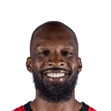
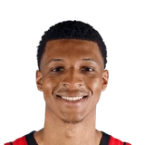
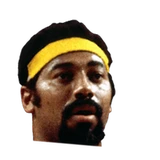

“It’s tough with Jabari (Smith Jr.) going down. He’s a vital piece of what we do. It’s going to take some time for us to get used to the rotations, who’s out on the floor, because of what he brought to the team. So collectively, we need to do our part in making each other look good, but we have to do it as a committee. We have to go out there, share the ball and play more together. And that’s going to take some time, but with the personnel and coaches we have, we’ll figure out something.”

What Jeff Green has said about other NBA players and coaches
11 quotes from Jeff Green about 11 other people around the NBA, newest first. Each one links to its original source.
Best quotes
Jeff Green on Nikola Jokić:
“I’m still learning Nikola, but I’m already understanding that Nikola’s a tough guy... Nikola’s great man.”
Peter Stringer:Jeff Green on why he returned to the Celtics:
“That guy right there... Rajon (Rondo). He's the best point guard in the league.”
What NBA players and coaches have said about Jeff Green →
Quotes per season
Jeff Green talks most about
 Jeff Green on Nikola Jokic2 quotes
Jeff Green on Nikola Jokic2 quotes- Glen Davis1 quote

Jabari Smith1 quote Jamal Murray1 quote
Jamal Murray1 quote Kevin Durant1 quote
Kevin Durant1 quote LeBron James1 quote
LeBron James1 quote Mike D'Antoni1 quote
Mike D'Antoni1 quote Otto Porter1 quote
Otto Porter1 quote Rajon Rondo1 quote
Rajon Rondo1 quote Russell Westbrook1 quote
Russell Westbrook1 quote
Wilt Chamberlain1 quote
2024-25
1 quote“It’s tough with Jabari (Smith Jr.) going down. He’s a vital piece of what we do. It’s going to take some time for us to get used to the rotations, who’s out on the floor, because of what he brought to the team. So collectively, we need to do our part in making each other look good, but we have to do it as a committee. We have to go out there, share the ball and play more together. And that’s going to take some time, but with the personnel and coaches we have, we’ll figure out something.”
2022-23
3 quotesJeff Green on Jamal Murray:
“He’s proven that he’s one of the best guards in this league.”
Jeff Green:
“We have to end it. We can’t give (LeBron) life. Tomorrow, it has to end.”
Harrison Wind:Jeff Green on Nikola Jokic passing Wilt Chamberlain in career triple-doubles:
“It’s an incredible list to be on, especially given how he started his career.”
2021-22
1 quoteJeff Green on Nikola Jokić:
“I’m still learning Nikola, but I’m already understanding that Nikola’s a tough guy... Nikola’s great man.”
2020-21
2 quotesAlex Schiffer:Jeff Green on Durant:
“I'm glad I don't have to guard him on a nightly basis.”
Adam Wexler:#Rockets Jeff Green on Russell Westbrook who announced today he was positive for COVID-19:
“Just making sure he's healthy. Making sure he's doing what he has to do to get healthy. I think that's more important than basketball.”
2019-20
1 quoteSalman Ali:Jeff Green on Mike D'Antoni saying he's a good fit:
“It means a lot... Now I'm just trying to do my job and play hard and most importantly be effective on the defensive end and try our team cause turnovers and get out in the open floor.”
2018-19
1 quoteChase Hughes:Jeff Green on Otto Porter saying Green will be dunking at 50:
“That's the plan. Dr. J is. Hopefully I am. I have a son and I will be dunking on him.”
2012-13
1 quotePeter Stringer:Jeff Green on why he returned to the Celtics:
“That guy right there... Rajon (Rondo). He's the best point guard in the league.”
2011-12
1 quote“They’ve already given him a qualifying offer, and he’s not going to turn that down. And if someone gives him an offer sheet, then they just have to decide whether they are going to match. “They almost have to sign (Davis). I don’t see any way that they can’t get that done.”